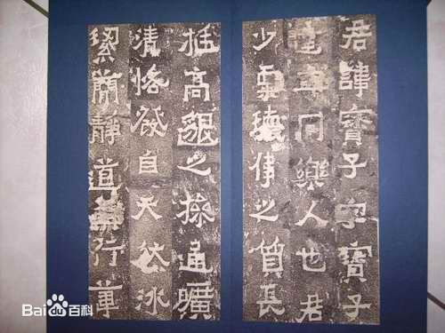

-
汉晋时期
汉朝首先在曲靖地区推行郡县制。西汉建元六年（前135年），堂琅县（今会泽、东川一带）、存鄢县（今宣威）的设立（为同年设立的犍为郡所辖），标志着郡县制在曲靖在云南的最早确立。元封二年（前109年），汉武帝刘彻派兵打败了盘江流域一代的“劳浸、靡莫”部族，滇国归顺了汉王朝。在今三岔一带建成了味县，隶属于益州郡。益州郡辖区包括味县（曲靖）、牧靡（寻甸）、铜濑（马龙）、同劳（陆良）。至此，曲靖的郡县制度全部确立。225年，诸葛亮亲率大军南征，在盘东一带与南中地区叛乱部族发生激战，主帅孟获被擒后率军归附，在三宝温泉石宝山与诸葛武侯和盟。诸葛亮三军会师味县，立纪功碑于城内。废益州郡设建宁郡，并将郡治由滇池迁到味县
-
隋唐时期
唐朝承隋制设南宁州。贞观八年（634年）改南宁州为郎州，设郎州都督府。开元五年（717年）又复名南宁州都督府。首任都督韦仁寿率军民在今曲靖老城以北二十里，筑成石城，武德八年（626年），自益州移都督于今治。天宝七年（748年），崛起于洱海区域的南诏灭爨，徙爨区20余万人到永昌（今保山一带），今曲靖市辖境由南诏拓东节度使控制。南诏及后来的大理国均在石城设石城郡。
-
宋元时期
宋大理国明政三年（971年），段氏与三十七部会盟石城，一定程度上恢复和发展了曲靖的封建领主制，促进了社会生产关系的改善和发展。南宋宝佑元年（1253年），忽必烈率蒙古铁骑渡过金沙江，进军云南。三个月后，大理国投降，两年后云南全境归属蒙元。元朝先后在石城设磨弥万户府，石城千户，元至元八年（1271年），改磨弥万户府为中路总管府。至元十三年（1276年），设曲靖路，辖南宁县、越州、马龙州、罗雄州、亦佐县、陆凉州、沾益州（今宣威）、交水县、石梁县（今宣威东北部）、罗山县（今富源北部）等16州（县）；至元二十二年（1285年），改石城为南宁县，治所南宁，辖陆凉、越州、罗雄、马龙、沾益、路南等州和仁德府；至元二十五年（1288年），改曲靖路总管府为曲靖路宣抚司；至元二十八年（1291年），改曲靖路宣抚司为曲靖路宣抚司管军民万户府。
-

明清时期
明洪武十四年（1381年），明军征云南克曲靖（白石江战役），翌年改曲靖路为曲靖军民府，治所南宁（今麒麟区），所辖州（县）与元基本相同。洪武二十年（1387年），开始在胜峰山下，交海（东海子）之滨建造新府城，取代石城。明朝在富源县境北部置平夷卫，直属云南都司；于县境南部置亦佐县，属曲靖府。成化十二年（1476年），在云南置曲靖等4兵备道。曲靖兵备道分署驻曲靖府。在曲靖设置邮传、关隘，加强与内地的联系。清王朝时，曲靖政治与明朝大致类似。改明代的布政使司为云南省，设巡抚，清初云贵总督曾驻曲靖。清朝康熙三十四年（1695年），撤平夷卫和亦佐县，把“夷”改为“彝”，合置平彝县（治所今县城），这是“平彝”县名之始；此前历朝皆称“平夷”。雍正初年“改土归流”，缩小了曲靖与内地的差异；雍正五年（1727年），从沾益分设宣威州，东川府（今会泽）从四川划归云南；雍正八年（1730年），置迤东道，治所先设于寻甸后迁南宁（曲靖）。乾隆三十年（1765年），清朝再改曲靖军民府为曲靖府，县府仍为南宁县。 [17]
-
近现代
民国二年（1913年），“奉中央政府令：一律裁府改县”，裁去曲靖府，南宁县改为曲靖县。除师宗属蒙自道监察区外，其余曲靖各县均属滇中道监察区。
民国十六年（1927年），直隶云南省。
民国三十七年（1948年）1月，设云南省第二区督察专员公署，驻曲靖县城。
1949年9月，滇东北临时人民行政专员公署成立。同月，中共滇东北地委成立。
1950年3月25日，设云南省曲靖专区督察专员公署，专署驻曲靖县。辖曲靖、沾益、宣威、平彝、马龙（驻通泉镇）、嵩明（驻嵩阳镇）、寻甸（驻仁德镇）等7县。11月改称云南省人民政府曲靖区专员公署。
1954年7月，与宜良专署合并为曲靖行政专员公署。行政专员公署驻曲靖县。
1970年，曲靖专区改称曲靖地区，地区驻曲靖县。辖曲靖、寻甸、宣威（驻榕城镇）、会泽、富源（驻中安镇）、沾益、师宗（驻丹凤）、罗平（驻罗雄镇）、陆良（驻中枢镇）、宜良、嵩明（驻嵩阳）、马龙（驻通泉镇）等12县及路南彝族自治县。
1997年5月6日，撤销曲靖地区，建立地级曲靖市，原县级曲靖市分设为麒麟区、沾益县。